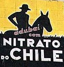

Potasa de Suria
 De: La Frikipedia, la enciclopedia extremadamente seria.
De: La Frikipedia, la enciclopedia extremadamente seria.
| De la serie alimentos y otras vainas:
|
|
|
| Nombre:
|
Potasa de suria, nitrato de chile
|
| Tipo de Comida:
|
pa' las plantas
|
| ¿Como se Come?
|
transformada en plantas
|
| ¿De donde Proviene?
|
Suria o Shile
|
| Ingrediente Basico:
|
muchos y muy variados, tanto que no caben todos aquí
|
| Forma de Presentación
|
Sobre el campo de cultivo o desde su saco, sin más
|
| Sabor:
|
A gloria bendita
|
 Marca competidora del mejunje fabricado por Armando Eltaco
Materia mágica y extradimensional también conocida como carbonato potásico, se compone de silvina, nicotina, purpurina y heces divinas, y en un principio se usaba para fertilizar los campos porque parece mierda es parecido a las heces y la gente era muy ignorante, pero que en realidad es una substancia milagrosa que sirve para absolutamente todo lo que pase por tu calenturienta imaginación, si todo, todooooooooo.
Su eslogan en un principio era "A campo español, abono español; producto nacional", pero ha sido substituido por "Que buena, que rica, la potasa de silvita".
En la infobox tienes un cartel promocional moderno de este maravilloso producto. Compra Potasa.
Utilidades
- Es un buen fertilizante de campos
- Sirve de alimento para perros, cerdos y percebes
- Es un potente explosivo
- Si la frotas y dices "producto nacional" tres veces, sale un genio que te concede un deseo
- Sirve como refrigerante
- Al untarlo en heridas las cura milagrosamente en 0,0001 nanosegundos
- Es sabrosa, nutritiva, reconstituyente y cura todas las enfermedades conocidas y desconocidas cuando se introduce en el organismo, normalmente de forma oral o anal
- Si eres pequeño te hace crecer y madurar físicamente. Si eres un anciano rejuveneces. Esto ocurre hasta que llegas a la edad ideal (220 años)
- Es altamente adictiva
- Es afrodisíaca si tú lo necesitas, es decir, casi siempre
- Cuando te la comes te vuelve muy listo y hace tontos a tus enemigos
- Te vuelve totalmente irresistible al sexo opuesto (si eres homosexual te vuelve irresistible ante gente de tu propio sexo)
- Te protege de la irresistibilidad de las personas que lo comen (ver utilidad anterior)
- Te da poderes como volar, superfuerza e imitar las patadas giratorias de Chuck Norris (aunque es imposible que te salgan como a él)
- Si comes mucha puedes hablar con Dios, tutearle e incluso convertirte en tu propio dios
- Te enseña a hacer absolutamente todo y que te salga perfecto, excepto las patadas giratorias de Chuck
- Por cada cucharada te da cien mil billones de puntos en el Ogame
- La leyenda dice que si eres un friki antifriki y la comes te curas y te vuelves normal, aunque es difícil de creer
Otras versiones
- Nitrato de Shile: Parecido a la potasa de suria, pero usado por la zona de Valencia y aledaños. Su composición es la misma, pero hecha en Chile. Se ve que Armando Eltaco, ingeniero agrónomo de aquel país, le robó la fórmula al dictador de Espiña, que la guardaba bajo siete llaves y custodiada por un enanito verde llamado Tojeiro, pero el tal Armando fue más listo y logró ponerle droja al enano en el Cola Cao y llevársela a Chile mientras Tojeiro dormía. De ahí a copar el mercado sólo hubo un paso.
- Potasa de Frankfurt: Potasa de Suria alemana usada para fertilizar los campos de los planetas del Ogame. Su eslogan era: "A campo alemán, abono alemán; producto nacional", pero ahora es "Potasa de Frankfurt: El abono para los campos que no usó Hitler".
- Potasa de Prusia: Potasa de Suria prusa (no rusa), Por si no lo sabías Prusia era un país y ahora ya no existe, pero eso no quita que la Potasa de Prusia sea posiblemente la mejor después de la de Suria y la de Zrusia.
- Potasa de Zrusia: Potasa de Suria zrusa (no confundir con Potasa de Prusia, Prusia existió realmente). Zrusia es un país mágico que estaba entre Rusia, Prusia y Bielorrusia, estaban especializados en armas atómicas, zodka (vodka zruso) y silvita (ver introducción). Si existiera realmente, sin duda su potasa sería la mejor (después de la española, claro).
Autor(es):
- Nexo
- Khazike Khashondo
- Coegho
- Hank
- Diegocon13
- Lunasfingo
- Helloombark
- Law ripley
- Genericool
- Jonllos
Frikipedia 2005-2016, Licencia
GFDL 1.2 - Extraído por FrikiLeaks